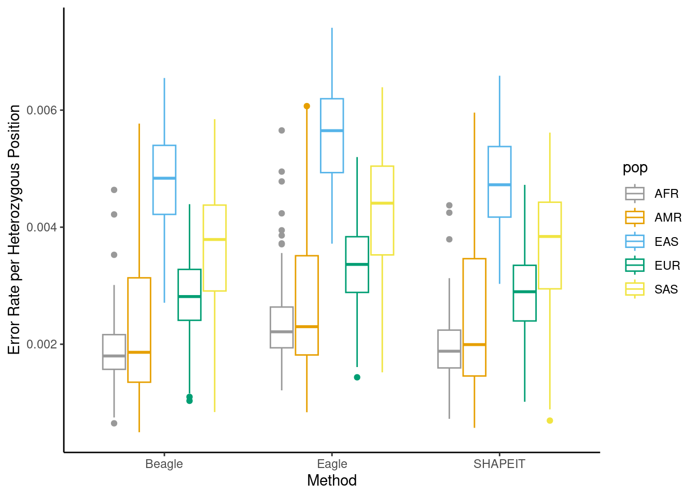
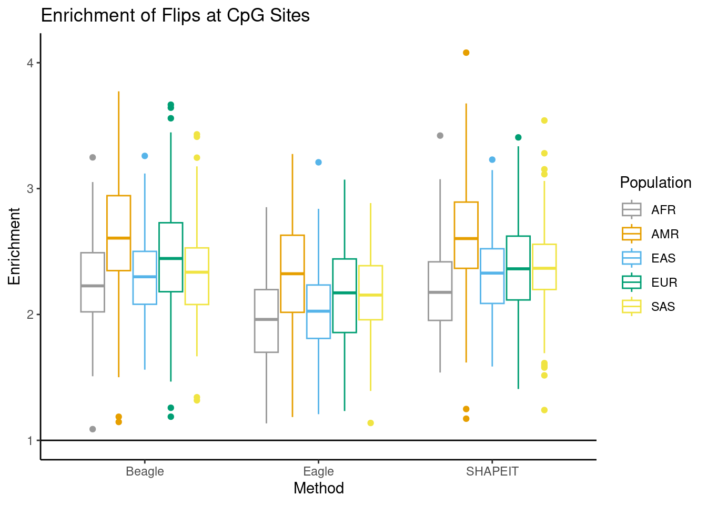
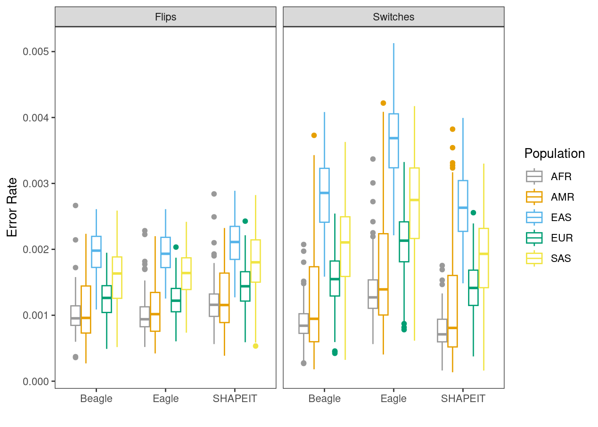
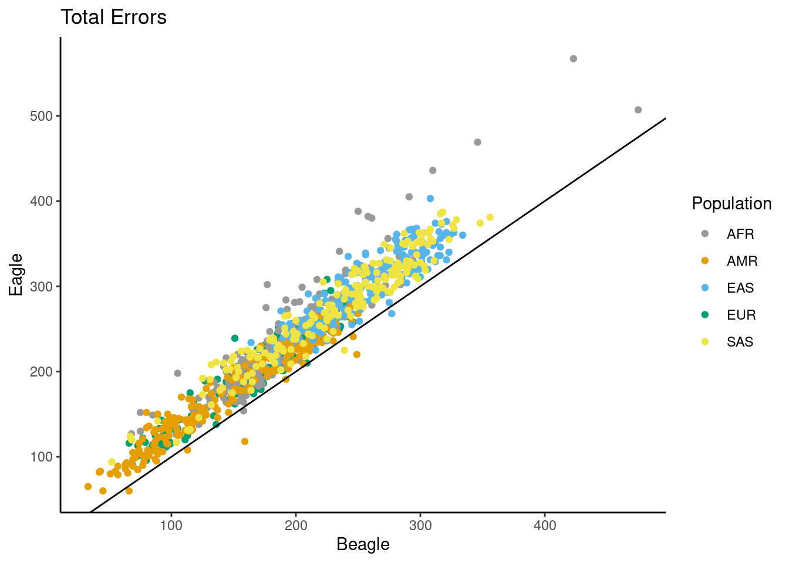

Synthetic Diploid Results
Andy Beck
2024-05-15
Last updated: 2024-05-29
Checks: 7 0
Knit directory: phasing_clean/
This reproducible R Markdown analysis was created with workflowr (version 1.7.1). The Checks tab describes the reproducibility checks that were applied when the results were created. The Past versions tab lists the development history.
Great! Since the R Markdown file has been committed to the Git repository, you know the exact version of the code that produced these results.
Great job! The global environment was empty. Objects defined in the global environment can affect the analysis in your R Markdown file in unknown ways. For reproduciblity it’s best to always run the code in an empty environment.
The command set.seed(20240501) was run prior to running
the code in the R Markdown file. Setting a seed ensures that any results
that rely on randomness, e.g. subsampling or permutations, are
reproducible.
Great job! Recording the operating system, R version, and package versions is critical for reproducibility.
Nice! There were no cached chunks for this analysis, so you can be confident that you successfully produced the results during this run.
Great job! Using relative paths to the files within your workflowr project makes it easier to run your code on other machines.
Great! You are using Git for version control. Tracking code development and connecting the code version to the results is critical for reproducibility.
The results in this page were generated with repository version bb12bc6. See the Past versions tab to see a history of the changes made to the R Markdown and HTML files.
Note that you need to be careful to ensure that all relevant files for
the analysis have been committed to Git prior to generating the results
(you can use wflow_publish or
wflow_git_commit). workflowr only checks the R Markdown
file, but you know if there are other scripts or data files that it
depends on. Below is the status of the Git repository when the results
were generated:
Ignored files:
Ignored: .Rhistory
Ignored: .Rproj.user/
Ignored: .ipynb_checkpoints/
Ignored: chr22_10k.bed
Ignored: data/1kgp/chr10_pilot_mask.bed
Ignored: data/1kgp/chr15/
Ignored: data/1kgp/chr22/
Ignored: data/1kgp/chr8/
Ignored: data/1kgp/chrX.vcf.gz
Ignored: data/1kgp/chrX.vcf.gz.tbi
Ignored: data/1kgp/chrX_2504_snps_noPAR.bcf
Ignored: data/1kgp/chrX_2504_snps_noPAR_noSing.bcf
Ignored: data/1kgp/chrX_freq.tsv
Ignored: data/1kgp/chrX_maf.tsv
Ignored: data/1kgp/chrX_pilot_mask.bed
Ignored: data/chr10.sizes
Ignored: data/chr15.1kb.sorted.bed
Ignored: data/chr15.fasta
Ignored: data/chr15.sizes
Ignored: data/chr15_gc1kb_pilot.bed
Ignored: data/chr15_mask.fasta
Ignored: data/chr15_mask.fasta.fai
Ignored: data/chr22.sizes
Ignored: data/chr8.sizes
Ignored: data/chrX.1kb.sorted.bed
Ignored: data/chrX.fasta
Ignored: data/chrX.sizes
Ignored: data/chrX_gc1kb_pilot.bed
Ignored: data/chrX_mask.fasta
Ignored: data/chrX_mask.fasta.fai
Ignored: data/hg38.chrom.sizes
Ignored: data/mask_pilot_15_fasta.bed
Ignored: data/mask_pilot_X_fasta.bed
Ignored: data/ref_GRCh38.fna
Ignored: data/ref_GRCh38.fna.fai
Ignored: data/ref_GRCh38.fna.in
Ignored: output/switch_errors/
Ignored: output/trio_phase/
Ignored: output/trio_phase_15/
Ignored: output/trio_phase_22/
Unstaged changes:
Modified: code/common_functions.R
Note that any generated files, e.g. HTML, png, CSS, etc., are not included in this status report because it is ok for generated content to have uncommitted changes.
These are the previous versions of the repository in which changes were
made to the R Markdown
(analysis/synthetic_diploid_results.Rmd) and HTML
(docs/synthetic_diploid_results.html) files. If you’ve
configured a remote Git repository (see ?wflow_git_remote),
click on the hyperlinks in the table below to view the files as they
were in that past version.
| File | Version | Author | Date | Message |
|---|---|---|---|---|
| Rmd | bb12bc6 | Andy Beck | 2024-05-29 | wflow_publish("analysis/synthetic_diploid_results.Rmd") |
| html | 1011565 | Andy Beck | 2024-05-29 | Build site. |
| Rmd | d1a6520 | Andy Beck | 2024-05-29 | wflow_publish(c("analysis/synthetic_diploid_results.Rmd")) |
| html | 6172512 | Andy Beck | 2024-05-29 | Build site. |
| Rmd | 0241a09 | Andy Beck | 2024-05-29 | wflow_publish("analysis/synthetic_diploid_results.Rmd") |
| html | 808cfb8 | Andy Beck | 2024-05-29 | Build site. |
| html | d6dca59 | Andy Beck | 2024-05-29 | Build site. |
| Rmd | f1bf0ba | Andy Beck | 2024-05-29 | wflow_publish(c("analysis/synthetic_diploid_results.Rmd", "analysis/trio_phasing_results.Rmd")) |
| html | 8041a90 | Andy Beck | 2024-05-29 | Build site. |
| Rmd | 0669558 | Andy Beck | 2024-05-29 | wflow_publish(c("analysis/synthetic_diploid_results.Rmd", "analysis/trio_phasing_results.Rmd")) |
| html | aa8704b | Andy Beck | 2024-05-28 | Build site. |
| Rmd | 3ea0c3d | Andy Beck | 2024-05-28 | wflow_publish("analysis/synthetic_diploid_results.Rmd") |
| html | af46d78 | Andy Beck | 2024-05-23 | Build site. |
| Rmd | 50265e3 | Andy Beck | 2024-05-23 | wflow_publish("analysis/synthetic_diploid_results.Rmd") |
| html | 7f7e2da | Andy Beck | 2024-05-22 | Build site. |
| Rmd | a13fa5e | Andy Beck | 2024-05-22 | wflow_publish("analysis/synthetic_diploid_results.Rmd") |
| html | f08aad3 | Andy Beck | 2024-05-22 | Build site. |
| Rmd | be983e0 | Andy Beck | 2024-05-22 | wflow_publish("analysis/synthetic_diploid_results.Rmd") |
| html | c8e461c | Andy Beck | 2024-05-22 | Build site. |
| Rmd | 2e92c4c | Andy Beck | 2024-05-22 | wflow_publish(c("analysis/index.Rmd", "analysis/synthetic_diploid_results.Rmd")) |
| Rmd | e3d7c36 | Andy Beck | 2024-05-22 | update 22May24 |
| html | 0e0d172 | Andy Beck | 2024-05-16 | Build site. |
| Rmd | e8cb325 | Andy Beck | 2024-05-16 | wflow_publish("analysis/synthetic_diploid_results.Rmd") |
Libraries and Directories
library(tidyverse)── Attaching core tidyverse packages ──────────────────────── tidyverse 2.0.0 ──
✔ dplyr 1.1.4 ✔ readr 2.1.5
✔ forcats 1.0.0 ✔ stringr 1.5.1
✔ ggplot2 3.5.0 ✔ tibble 3.2.1
✔ lubridate 1.9.3 ✔ tidyr 1.3.1
✔ purrr 1.0.2
── Conflicts ────────────────────────────────────────── tidyverse_conflicts() ──
✖ purrr::%||%() masks base::%||%()
✖ dplyr::filter() masks stats::filter()
✖ dplyr::lag() masks stats::lag()
ℹ Use the conflicted package (<http://conflicted.r-lib.org/>) to force all conflicts to become errorslibrary(janitor)
Attaching package: 'janitor'
The following objects are masked from 'package:stats':
chisq.test, fisher.testlibrary(reactable)
source("code/common_functions.R")
library(yaml)
config_obj <- yaml::read_yaml("_config.yaml")
eagle_switch_dir <- paste0(config_obj$base_dir,"/output/switch_errors/switch_errors/eagle/annotated/")
shapeit_switch_dir <- paste0(config_obj$base_dir,"/output/switch_errors/switch_errors/shapeit/annotated/")
beagle_switch_dir <- paste0(config_obj$base_dir,"/output/switch_errors/switch_errors/beagle/annotated/")
num_sites_dir <- paste0(config_obj$base_dir,"/output/switch_errors/vcf_n_sites/")
het_loc_dir <- paste0(config_obj$base_dir,"/output/switch_errors/het_loc/")
sample_info_df <- read_csv("data/1kgp/subject_info.csv") %>%
select(SAMPLE_NAME, POPULATION, SUPER)Rows: 3202 Columns: 6
── Column specification ────────────────────────────────────────────────────────
Delimiter: ","
chr (5): SAMPLE_NAME, POPULATION, SUPER, fatherID, motherID
dbl (1): sex
ℹ Use `spec()` to retrieve the full column specification for this data.
ℹ Specify the column types or set `show_col_types = FALSE` to quiet this message.pair_info_df <- read_delim("data/sample_pairs.csv", col_names = c("POP", "ID1", "ID2"))Rows: 1000 Columns: 3
── Column specification ────────────────────────────────────────────────────────
Delimiter: ","
chr (3): POP, ID1, ID2
ℹ Use `spec()` to retrieve the full column specification for this data.
ℹ Specify the column types or set `show_col_types = FALSE` to quiet this message.pair_info_df <- left_join(pair_info_df, sample_info_df, by = c("ID1"="SAMPLE_NAME")) %>%
rename(SP = SUPER) %>%
select(-POPULATION)
# data/chrX_gc1kb_pilot.bed
gc_content_1kb <- read_tsv("data/chrX_gc1kb_pilot.bed")Rows: 156041 Columns: 12
── Column specification ────────────────────────────────────────────────────────
Delimiter: "\t"
chr (1): #1_usercol
dbl (11): 2_usercol, 3_usercol, 4_pct_at, 5_pct_gc, 6_num_A, 7_num_C, 8_num_...
ℹ Use `spec()` to retrieve the full column specification for this data.
ℹ Specify the column types or set `show_col_types = FALSE` to quiet this message.colnames(gc_content_1kb) <- c("CHR", "START", "END", "AT", "GC", "A", "C", "G", "T", "TOTAL", "OTHER", "LENGTH")
gc_content_1kb <- gc_content_1kb %>%
mutate(bin_id = (START / 1000) + 1)
cbPalette <- c("#999999", "#E69F00", "#56B4E9", "#009E73", "#F0E442", "#0072B2", "#D55E00", "#CC79A7", "#000")
maf_prop_df <- read_csv(paste0(config_obj$base_dir,"/output/switch_errors/maf_props.csv"))Rows: 39000 Columns: 3
── Column specification ────────────────────────────────────────────────────────
Delimiter: ","
chr (1): category
dbl (2): proportion, id
ℹ Use `spec()` to retrieve the full column specification for this data.
ℹ Specify the column types or set `show_col_types = FALSE` to quiet this message.pair_info_df$id <- 1:1000
maf_prop_df <- left_join(maf_prop_df, {pair_info_df %>% select(id, SP, POP)})Joining with `by = join_by(id)`pair_info_df <- pair_info_df %>% select(id)
#regenIntroduction
In this document, we present summaries and figures for the distributions of errors in phasing of our synthetic X chromosome diploids.
Load Switch and Flips Errors
df_vcftools <- read_csv(paste0(config_obj$base_dir,"/output/switch_errors/switch_errors/summary.csv"))Rows: 1000 Columns: 45
── Column specification ────────────────────────────────────────────────────────
Delimiter: ","
chr (2): pop, subpop
dbl (43): pair_id, n_switch_eagle, n_switch_beagle, n_switch_shapeit, n_flip...
ℹ Use `spec()` to retrieve the full column specification for this data.
ℹ Specify the column types or set `show_col_types = FALSE` to quiet this message.Tables
Mean number of switches and flips
df_vcftools %>%
group_by(pop) %>%
summarize(mean_switch_eagle = mean(n_other_eagle),
mean_switch_beagle = mean(n_other_beagle),
mean_switch_shapeit = mean(n_other_shapeit),
mean_flip_eagle = mean(n_flip_eagle),
mean_flip_beagle = mean(n_flip_beagle),
mean_flip_shapeit = mean(n_flip_shapeit)) %>%
knitr::kable()| pop | mean_switch_eagle | mean_switch_beagle | mean_switch_shapeit | mean_flip_eagle | mean_flip_beagle | mean_flip_shapeit |
|---|---|---|---|---|---|---|
| AFR | 135.285 | 88.580 | 76.900 | 99.790 | 100.670 | 119.285 |
| AMR | 102.735 | 73.810 | 68.585 | 68.440 | 69.220 | 80.545 |
| EAS | 197.965 | 153.140 | 143.360 | 105.165 | 105.800 | 114.190 |
| EUR | 125.060 | 91.635 | 84.570 | 74.620 | 75.255 | 86.300 |
| SAS | 170.675 | 129.670 | 118.150 | 102.920 | 100.890 | 114.135 |
Mean number of switches and flips per MB
df_vcftools %>%
group_by(pop) %>%
summarize(mean_switch_eagle = mean(n_other_eagle / size_mb),
mean_switch_beagle = mean(n_other_beagle / size_mb),
mean_switch_shapeit = mean(n_other_shapeit / size_mb),
mean_flip_eagle = mean(n_flip_eagle / size_mb),
mean_flip_beagle = mean(n_flip_beagle / size_mb),
mean_flip_shapeit = mean(n_flip_shapeit / size_mb)) %>%
knitr::kable()| pop | mean_switch_eagle | mean_switch_beagle | mean_switch_shapeit | mean_flip_eagle | mean_flip_beagle | mean_flip_shapeit |
|---|---|---|---|---|---|---|
| AFR | 0.9031620 | 0.5913448 | 0.5133726 | 0.6662131 | 0.6720729 | 0.7963498 |
| AMR | 0.6858833 | 0.4927728 | 0.4578917 | 0.4569195 | 0.4621275 | 0.5377349 |
| EAS | 1.3216428 | 1.0223829 | 0.9570942 | 0.7020961 | 0.7063356 | 0.7623499 |
| EUR | 0.8348790 | 0.6117393 | 0.5645758 | 0.4981507 | 0.5023896 | 0.5761263 |
| SAS | 1.1394064 | 0.8656656 | 0.7887532 | 0.6870792 | 0.6735311 | 0.7619485 |
Mean number of switches and flips per heterozygous site
df_vcftools %>%
group_by(pop) %>%
summarize(mean_switch_eagle = mean(n_other_eagle / n_hets),
mean_switch_beagle = mean(n_other_beagle / n_hets),
mean_switch_shapeit = mean(n_other_shapeit / n_hets),
mean_flip_eagle = mean(n_flip_eagle / n_hets),
mean_flip_beagle = mean(n_flip_beagle / n_hets),
mean_flip_shapeit = mean(n_flip_shapeit / n_hets)) %>%
knitr::kable()| pop | mean_switch_eagle | mean_switch_beagle | mean_switch_shapeit | mean_flip_eagle | mean_flip_beagle | mean_flip_shapeit |
|---|---|---|---|---|---|---|
| AFR | 0.0013558 | 0.0008880 | 0.0007707 | 0.0009991 | 0.0010081 | 0.0011945 |
| AMR | 0.0016760 | 0.0012206 | 0.0011439 | 0.0010802 | 0.0011009 | 0.0012704 |
| EAS | 0.0036614 | 0.0028352 | 0.0026536 | 0.0019427 | 0.0019555 | 0.0021114 |
| EUR | 0.0020636 | 0.0015108 | 0.0013951 | 0.0012304 | 0.0012423 | 0.0014230 |
| SAS | 0.0026914 | 0.0020451 | 0.0018639 | 0.0016220 | 0.0015903 | 0.0017988 |
Mean median number of heterozygous sites between errors
df_vcftools %>%
group_by(pop) %>%
summarize(mean_het_switch_beagle = mean(med_hets_switch_beagle),
mean_het_switch_eagle = mean(med_hets_switch_eagle),
mean_het_switch_shapeit = mean(med_hets_switch_shapeit)) %>%
knitr::kable()| pop | mean_het_switch_beagle | mean_het_switch_eagle | mean_het_switch_shapeit |
|---|---|---|---|
| AFR | 472.1675 | 363.4250 | 472.1025 |
| AMR | 389.9675 | 314.2400 | 370.4475 |
| EAS | 122.4150 | 109.6275 | 128.7175 |
| EUR | 295.7150 | 236.3000 | 305.5150 |
| SAS | 175.8725 | 156.7575 | 185.4350 |
df_vcftools %>%
group_by(pop) %>%
summarize(mean_het_flip_beagle = mean(med_hets_flip_beagle),
mean_het_flip_eagle = mean(med_hets_flip_eagle),
mean_het_flip_shapeit = mean(med_hets_flip_shapeit)) %>%
knitr::kable()| pop | mean_het_flip_beagle | mean_het_flip_eagle | mean_het_flip_shapeit |
|---|---|---|---|
| AFR | 620.1825 | 601.1875 | 505.3600 |
| AMR | 572.5475 | 588.4750 | 487.8575 |
| EAS | 271.3000 | 290.6925 | 256.0175 |
| EUR | 502.0550 | 504.4675 | 431.3800 |
| SAS | 359.3325 | 356.2950 | 320.4900 |
Note here that the populations will also differ in regards to the mean number of heterozygous sites in each pseudo-diploid:
df_vcftools %>%
group_by(pop) %>%
summarize(mean_n_het = mean(n_hets),
sd_n_het = sd(n_hets)) %>%
knitr::kable()| pop | mean_n_het | sd_n_het |
|---|---|---|
| AFR | 99817.32 | 3346.941 |
| AMR | 66309.95 | 12057.033 |
| EAS | 54261.28 | 2590.510 |
| EUR | 60595.20 | 3056.270 |
| SAS | 63663.90 | 2690.040 |
Mean mean number of heterozygous sites between errors
df_vcftools %>%
group_by(pop) %>%
summarize(mean_het_switch_beagle = mean(mean_hets_switch_beagle),
mean_het_switch_eagle = mean(mean_hets_switch_eagle),
mean_het_switch_shapeit = mean(mean_hets_switch_shapeit)) %>%
knitr::kable()| pop | mean_het_switch_beagle | mean_het_switch_eagle | mean_het_switch_shapeit |
|---|---|---|---|
| AFR | 1232.3628 | 786.2282 | 1433.5878 |
| AMR | 1230.0232 | 779.9772 | 1396.1901 |
| EAS | 361.4670 | 277.4508 | 386.9342 |
| EUR | 741.0225 | 526.7262 | 821.1534 |
| SAS | 545.7064 | 401.1355 | 619.7363 |
df_vcftools %>%
group_by(pop) %>%
summarize(mean_het_flip_beagle = mean(mean_hets_flip_beagle),
mean_het_flip_eagle = mean(mean_hets_flip_eagle),
mean_het_flip_shapeit = mean(mean_hets_flip_shapeit)) %>%
knitr::kable()| pop | mean_het_flip_beagle | mean_het_flip_eagle | mean_het_flip_shapeit |
|---|---|---|---|
| AFR | 1052.3105 | 1059.8692 | 879.6391 |
| AMR | 1083.4175 | 1048.3398 | 908.3891 |
| EAS | 519.1688 | 520.3449 | 482.4776 |
| EUR | 861.5598 | 844.5954 | 753.6581 |
| SAS | 675.3881 | 644.3616 | 597.1906 |
Errors at CpGs
Total
df_vcftools %>%
summarize(mean_switch_eagle = mean(n_other_cpg_eagle),
mean_switch_beagle = mean(n_other_cpg_beagle),
mean_switch_shapeit = mean(n_other_cpg_shapeit),
mean_flip_eagle = mean(n_flip_cpg_eagle),
mean_flip_beagle = mean(n_flip_cpg_beagle),
mean_flip_shapeit = mean(n_flip_cpg_shapeit)) %>%
knitr::kable()| mean_switch_eagle | mean_switch_beagle | mean_switch_shapeit | mean_flip_eagle | mean_flip_beagle | mean_flip_shapeit |
|---|---|---|---|---|---|
| 28.049 | 17.31 | 15.32 | 27.184 | 30.642 | 34.714 |
By Population
df_vcftools %>%
group_by(pop) %>%
summarize(mean_switch_eagle = mean(n_other_cpg_eagle),
mean_switch_beagle = mean(n_other_cpg_beagle),
mean_switch_shapeit = mean(n_other_cpg_shapeit),
mean_flip_eagle = mean(n_flip_cpg_eagle),
mean_flip_beagle = mean(n_flip_cpg_beagle),
mean_flip_shapeit = mean(n_flip_cpg_shapeit)) %>%
knitr::kable()| pop | mean_switch_eagle | mean_switch_beagle | mean_switch_shapeit | mean_flip_eagle | mean_flip_beagle | mean_flip_shapeit |
|---|---|---|---|---|---|---|
| AFR | 26.220 | 13.170 | 10.895 | 28.15 | 32.760 | 37.820 |
| AMR | 21.065 | 12.195 | 11.120 | 22.79 | 25.820 | 30.035 |
| EAS | 37.305 | 25.210 | 23.090 | 30.33 | 34.840 | 37.910 |
| EUR | 23.030 | 14.740 | 12.620 | 22.81 | 26.395 | 29.305 |
| SAS | 32.625 | 21.235 | 18.875 | 31.84 | 33.395 | 38.500 |
Proportions
df_vcftools %>%
summarize(mean_switch_eagle = mean(n_other_cpg_eagle / n_other_eagle),
mean_switch_beagle = mean(n_other_cpg_beagle / n_other_beagle),
mean_switch_shapeit = mean(n_other_cpg_shapeit / n_other_shapeit),
mean_flip_eagle = mean(n_flip_cpg_eagle / n_flip_eagle),
mean_flip_beagle = mean(n_flip_cpg_beagle / n_flip_beagle),
mean_flip_shapeit = mean(n_flip_cpg_shapeit / n_flip_shapeit)) %>%
knitr::kable()| mean_switch_eagle | mean_switch_beagle | mean_switch_shapeit | mean_flip_eagle | mean_flip_beagle | mean_flip_shapeit |
|---|---|---|---|---|---|
| 0.1930164 | 0.1605653 | 0.1549997 | 0.3019655 | 0.3402046 | 0.3389541 |
By Population
df_vcftools %>%
group_by(pop) %>%
summarize(mean_switch_eagle = mean(n_other_cpg_eagle / n_other_eagle),
mean_switch_beagle = mean(n_other_cpg_beagle / n_other_beagle),
mean_switch_shapeit = mean(n_other_cpg_shapeit / n_other_shapeit),
mean_flip_eagle = mean(n_flip_cpg_eagle / n_flip_eagle),
mean_flip_beagle = mean(n_flip_cpg_beagle / n_flip_beagle),
mean_flip_shapeit = mean(n_flip_cpg_shapeit / n_flip_shapeit)) %>%
knitr::kable()| pop | mean_switch_eagle | mean_switch_beagle | mean_switch_shapeit | mean_flip_eagle | mean_flip_beagle | mean_flip_shapeit |
|---|---|---|---|---|---|---|
| AFR | 0.1941425 | 0.1479915 | 0.1425189 | 0.2802358 | 0.3240284 | 0.3162838 |
| AMR | 0.2058297 | 0.1634704 | 0.1595254 | 0.3289779 | 0.3702323 | 0.3730968 |
| EAS | 0.1886936 | 0.1643634 | 0.1610919 | 0.2887750 | 0.3290075 | 0.3313922 |
| EUR | 0.1844417 | 0.1617823 | 0.1507598 | 0.3029541 | 0.3475032 | 0.3375451 |
| SAS | 0.1919745 | 0.1652189 | 0.1611023 | 0.3088848 | 0.3302515 | 0.3364526 |
Enrichment
We compute the ratio of the proportion of errors at CpGs to the proportion of heterozygous locations that are at CpGs.
df_vcftools %>%
summarize(mean_switch_eagle = mean((n_other_cpg_eagle / n_other_eagle) / ( n_het_cpg / n_hets)),
mean_switch_beagle = mean((n_other_cpg_beagle / n_other_beagle) / ( n_het_cpg / n_hets)),
mean_switch_shapeit = mean((n_other_cpg_shapeit / n_other_shapeit) / ( n_het_cpg / n_hets) ),
mean_flip_eagle = mean((n_flip_cpg_eagle / n_flip_eagle) / ( n_het_cpg / n_hets)),
mean_flip_beagle = mean((n_flip_cpg_beagle / n_flip_beagle) / ( n_het_cpg / n_hets)),
mean_flip_shapeit = mean((n_flip_cpg_shapeit / n_flip_shapeit) / ( n_het_cpg / n_hets))) %>%
knitr::kable()| mean_switch_eagle | mean_switch_beagle | mean_switch_shapeit | mean_flip_eagle | mean_flip_beagle | mean_flip_shapeit |
|---|---|---|---|---|---|
| 1.355444 | 1.127716 | 1.088649 | 2.121156 | 2.389601 | 2.381002 |
Alternative view: odds ratios
df_vcftools %>%
mutate( prop_cpg_beagle = n_other_cpg_beagle / n_other_beagle,
prop_cpg_eagle = n_other_cpg_eagle / n_other_eagle,
prop_cpg_shapeit = n_other_cpg_shapeit / n_other_shapeit) %>%
mutate(ods_beagle = prop_cpg_beagle / (1 - prop_cpg_beagle),
ods_eagle = prop_cpg_eagle / (1 - prop_cpg_eagle),
ods_shapeit = prop_cpg_shapeit / (1 - prop_cpg_shapeit),
ods_het = ( n_het_cpg / n_hets) / (1 - ( n_het_cpg / n_hets))) %>%
mutate(Beagle = ods_beagle / ods_het,
Eagle = ods_eagle / ods_het,
SHAPEIT = ods_shapeit / ods_het) %>%
select(pop, Beagle, Eagle, SHAPEIT) %>%
pivot_longer(-pop, names_to = "Method", values_to = "OR") %>%
ggplot(aes(x = Method, y = OR, colour = pop)) +
geom_boxplot() +
ylab("Odds CpG Switch / Odds CpG Het") +
ggtitle("Odds Ratio of CpG Status for Switches") +
theme_classic() +
labs(colour = "Population") +
scale_color_manual(values = cbPalette) +
geom_hline(yintercept = 1, linetype=2)
df_vcftools %>%
mutate( prop_cpg_beagle = n_other_cpg_beagle / n_other_beagle,
prop_cpg_eagle = n_other_cpg_eagle / n_other_eagle,
prop_cpg_shapeit = n_other_cpg_shapeit / n_other_shapeit) %>%
mutate(ods_beagle = prop_cpg_beagle / (1 - prop_cpg_beagle),
ods_eagle = prop_cpg_eagle / (1 - prop_cpg_eagle),
ods_shapeit = prop_cpg_shapeit / (1 - prop_cpg_shapeit),
ods_het = ( n_het_cpg / n_hets) / (1 - ( n_het_cpg / n_hets))) %>%
mutate(Beagle = ods_beagle / ods_het,
Eagle = ods_eagle / ods_het,
SHAPEIT = ods_shapeit / ods_het) %>%
select(pop, Beagle, Eagle, SHAPEIT) %>%
pivot_longer(-pop, names_to = "Method", values_to = "OR") %>%
ggplot(aes(x = Method, y = OR)) +
geom_boxplot() +
ylab("Odds CpG Switch / Odds CpG Het") +
ggtitle("Odds Ratio of CpG Status for Switches") +
theme_classic() +
scale_color_manual(values = cbPalette) +
geom_hline(yintercept = 1, linetype=2)And flips:
df_vcftools %>%
mutate( prop_cpg_beagle = n_flip_cpg_beagle / n_flip_beagle,
prop_cpg_eagle = n_flip_cpg_eagle / n_flip_eagle,
prop_cpg_shapeit = n_flip_cpg_shapeit / n_flip_shapeit) %>%
mutate(ods_beagle = prop_cpg_beagle / (1 - prop_cpg_beagle),
ods_eagle = prop_cpg_eagle / (1 - prop_cpg_eagle),
ods_shapeit = prop_cpg_shapeit / (1 - prop_cpg_shapeit),
ods_het = ( n_het_cpg / n_hets) / (1 - ( n_het_cpg / n_hets))) %>%
mutate(Beagle = ods_beagle / ods_het,
Eagle = ods_eagle / ods_het,
SHAPEIT = ods_shapeit / ods_het) %>%
select(pop, Beagle, Eagle, SHAPEIT) %>%
pivot_longer(-pop, names_to = "Method", values_to = "OR") %>%
ggplot(aes(x = Method, y = OR, colour = pop)) +
geom_boxplot() +
ylab("Odds CpG Switch / Odds CpG Het") +
ggtitle("Odds Ratio of CpG Status for Switches") +
theme_classic() +
labs(colour = "Population") +
scale_color_manual(values = cbPalette) +
geom_hline(yintercept = 1, linetype=2)
df_vcftools %>%
mutate( prop_cpg_beagle = n_other_cpg_beagle / n_other_beagle,
prop_cpg_eagle = n_other_cpg_eagle / n_other_eagle,
prop_cpg_shapeit = n_other_cpg_shapeit / n_other_shapeit) %>%
mutate(ods_beagle = prop_cpg_beagle / (1 - prop_cpg_beagle),
ods_eagle = prop_cpg_eagle / (1 - prop_cpg_eagle),
ods_shapeit = prop_cpg_shapeit / (1 - prop_cpg_shapeit),
ods_het = ( n_het_cpg / n_hets) / (1 - ( n_het_cpg / n_hets))) %>%
mutate(Beagle = ods_beagle / ods_het,
Eagle = ods_eagle / ods_het,
SHAPEIT = ods_shapeit / ods_het) %>%
select(pop, Beagle, Eagle, SHAPEIT) %>%
pivot_longer(-pop, names_to = "Method", values_to = "OR") %>%
ggplot(aes(x = Method, y = OR)) +
geom_boxplot() +
ylab("Odds CpG Switch / Odds CpG Het") +
ggtitle("Odds Ratio of CpG Status for Switches") +
theme_classic() +
scale_color_manual(values = cbPalette) +
geom_hline(yintercept = 1, linetype=2)
By Population
df_vcftools %>%
group_by(pop) %>%
summarize(mean_switch_eagle = mean((n_other_cpg_eagle / n_other_eagle) / ( n_het_cpg / n_hets)),
mean_switch_beagle = mean((n_other_cpg_beagle / n_other_beagle) / ( n_het_cpg / n_hets)),
mean_switch_shapeit = mean((n_other_cpg_shapeit / n_other_shapeit) / ( n_het_cpg / n_hets) ),
mean_flip_eagle = mean((n_flip_cpg_eagle / n_flip_eagle) / ( n_het_cpg / n_hets)),
mean_flip_beagle = mean((n_flip_cpg_beagle / n_flip_beagle) / ( n_het_cpg / n_hets)),
mean_flip_shapeit = mean((n_flip_cpg_shapeit / n_flip_shapeit) / ( n_het_cpg / n_hets))) %>%
knitr::kable()| pop | mean_switch_eagle | mean_switch_beagle | mean_switch_shapeit | mean_flip_eagle | mean_flip_beagle | mean_flip_shapeit |
|---|---|---|---|---|---|---|
| AFR | 1.352531 | 1.030998 | 0.9928695 | 1.952522 | 2.257366 | 2.203883 |
| AMR | 1.452104 | 1.153275 | 1.1254495 | 2.321056 | 2.612145 | 2.632413 |
| EAS | 1.320305 | 1.150108 | 1.1272621 | 2.020877 | 2.302090 | 2.319491 |
| EUR | 1.303263 | 1.142911 | 1.0656169 | 2.140890 | 2.455553 | 2.385270 |
| SAS | 1.349017 | 1.161286 | 1.1320457 | 2.170436 | 2.320850 | 2.363954 |
Figures
Total Errors
df_vcftools %>%
mutate(Beagle = n_other_beagle + n_flip_beagle,
Eagle = n_other_eagle + n_flip_eagle,
SHAPEIT = n_other_shapeit + n_flip_shapeit) %>%
ggplot(aes(x = Beagle, y = Eagle, color = pop)) +
geom_point() +
ggtitle("Total Errors") +
theme_classic() +
geom_abline(slope = 1, intercept = 0) +
scale_color_manual(values = cbPalette) +
labs(color = "Population")
df_vcftools %>%
mutate(Beagle = n_other_beagle + n_flip_beagle,
Eagle = n_other_eagle + n_flip_eagle,
SHAPEIT = n_other_shapeit + n_flip_shapeit) %>%
ggplot(aes(x = Beagle, y = SHAPEIT, color = pop)) +
geom_point() +
ggtitle("Total Errors") +
theme_classic() +
geom_abline(slope = 1, intercept = 0) +
scale_color_manual(values = cbPalette)
df_vcftools %>%
mutate(Beagle = n_other_beagle + n_flip_beagle,
Eagle = n_other_eagle + n_flip_eagle,
SHAPEIT = n_other_shapeit + n_flip_shapeit) %>%
ggplot(aes(x = Eagle, y = SHAPEIT, color = pop)) +
geom_point() +
ggtitle("Total Errors") +
theme_classic() +
geom_abline(slope = 1, intercept = 0) +
scale_color_manual(values = cbPalette)
Error rates (per heterozygous site)
df_vcftools %>%
mutate(Beagle = (n_other_beagle + n_flip_beagle) / n_hets,
Eagle = (n_other_eagle + n_flip_eagle) / n_hets,
SHAPEIT = (n_other_shapeit + n_flip_shapeit) / n_hets) %>%
ggplot(aes(x = Beagle, y = Eagle, color = pop)) +
geom_point() +
ggtitle("Total Errors per Heterozygous Site") +
theme_classic() +
geom_abline(slope = 1, intercept = 0) +
scale_color_manual(values = cbPalette)
df_vcftools %>%
mutate(Beagle = (n_other_beagle + n_flip_beagle) / n_hets,
Eagle = (n_other_eagle + n_flip_eagle) / n_hets,
SHAPEIT = (n_other_shapeit + n_flip_shapeit) / n_hets) %>%
ggplot(aes(x = Beagle, y = SHAPEIT, color = pop)) +
geom_point() +
ggtitle("Total Errors per Heterozygous Site") +
theme_classic() +
geom_abline(slope = 1, intercept = 0) +
scale_color_manual(values = cbPalette)
df_vcftools %>%
mutate(Beagle = (n_other_beagle + n_flip_beagle) / n_hets,
Eagle = (n_other_eagle + n_flip_eagle) / n_hets,
SHAPEIT = (n_other_shapeit + n_flip_shapeit) / n_hets) %>%
ggplot(aes(x = Eagle, y = SHAPEIT, color = pop)) +
geom_point() +
ggtitle("Total Errors per Heterozygous Site") +
theme_classic() +
geom_abline(slope = 1, intercept = 0) +
scale_color_manual(values = cbPalette)
Non-flip switches
df_vcftools %>%
mutate(Beagle = (n_other_beagle),
Eagle = (n_other_eagle ),
SHAPEIT = (n_other_shapeit)) %>%
ggplot(aes(x = Beagle, y = Eagle, color = pop)) +
geom_point() +
ggtitle("Switches") +
theme_classic() +
geom_abline(slope = 1, intercept = 0) +
scale_color_manual(values = cbPalette)
df_vcftools %>%
mutate(Beagle = (n_other_beagle),
Eagle = (n_other_eagle ),
SHAPEIT = (n_other_shapeit)) %>%
ggplot(aes(x = Beagle, y = SHAPEIT, color = pop)) +
geom_point() +
ggtitle("Switches") +
theme_classic() +
geom_abline(slope = 1, intercept = 0) +
scale_color_manual(values = cbPalette)
df_vcftools %>%
mutate(Beagle = (n_other_beagle),
Eagle = (n_other_eagle ),
SHAPEIT = (n_other_shapeit)) %>%
ggplot(aes(x = Eagle, y = SHAPEIT, color = pop)) +
geom_point() +
ggtitle("Switches") +
theme_classic() +
geom_abline(slope = 1, intercept = 0) +
scale_color_manual(values = cbPalette)
Per het. site
df_vcftools %>%
mutate(Beagle = (n_other_beagle) / n_hets,
Eagle = (n_other_eagle ) / n_hets,
SHAPEIT = (n_other_shapeit) / n_hets) %>%
ggplot(aes(x = Beagle, y = Eagle, color = pop)) +
geom_point() +
ggtitle("Switches per Heterozygous Site") +
theme_classic() +
geom_abline(slope = 1, intercept = 0) +
scale_color_manual(values = cbPalette)
df_vcftools %>%
mutate(Beagle = (n_other_beagle) / n_hets,
Eagle = (n_other_eagle ) / n_hets,
SHAPEIT = (n_other_shapeit) / n_hets) %>%
ggplot(aes(x = Beagle, y = SHAPEIT, color = pop)) +
geom_point() +
ggtitle("Switches per Heterozygous Site") +
theme_classic() +
geom_abline(slope = 1, intercept = 0) +
scale_color_manual(values = cbPalette)
| Version | Author | Date |
|---|---|---|
| 7f7e2da | Andy Beck | 2024-05-22 |
df_vcftools %>%
mutate(Beagle = (n_other_beagle) / n_hets,
Eagle = (n_other_eagle ) / n_hets,
SHAPEIT = (n_other_shapeit) / n_hets) %>%
ggplot(aes(x = Eagle, y = SHAPEIT, color = pop)) +
geom_point() +
ggtitle("Switches per Heterozygous Site") +
theme_classic() +
geom_abline(slope = 1, intercept = 0) +
scale_color_manual(values = cbPalette)
| Version | Author | Date |
|---|---|---|
| 7f7e2da | Andy Beck | 2024-05-22 |
Flips
df_vcftools %>%
mutate(Beagle = (n_flip_beagle),
Eagle = (n_flip_eagle ),
SHAPEIT = (n_flip_shapeit)) %>%
ggplot(aes(x = Beagle, y = Eagle, color = pop)) +
geom_point() +
ggtitle("Flips") +
theme_classic() +
geom_abline(slope = 1, intercept = 0) +
scale_color_manual(values = cbPalette)
| Version | Author | Date |
|---|---|---|
| 7f7e2da | Andy Beck | 2024-05-22 |
df_vcftools %>%
mutate(Beagle = (n_flip_beagle),
Eagle = (n_flip_eagle ),
SHAPEIT = (n_flip_shapeit)) %>%
ggplot(aes(x = Beagle, y = SHAPEIT, color = pop)) +
geom_point() +
ggtitle("Flips") +
theme_classic() +
geom_abline(slope = 1, intercept = 0) +
scale_color_manual(values = cbPalette)
| Version | Author | Date |
|---|---|---|
| af46d78 | Andy Beck | 2024-05-23 |
df_vcftools %>%
mutate(Beagle = (n_flip_beagle),
Eagle = (n_flip_eagle ),
SHAPEIT = (n_flip_shapeit)) %>%
ggplot(aes(x = Eagle, y = SHAPEIT, color = pop)) +
geom_point() +
ggtitle("Flips") +
theme_classic() +
geom_abline(slope = 1, intercept = 0) +
scale_color_manual(values = cbPalette)
Per het. site
df_vcftools %>%
mutate(Beagle = (n_flip_beagle) / n_hets,
Eagle = (n_flip_eagle ) / n_hets,
SHAPEIT = (n_flip_shapeit) / n_hets) %>%
ggplot(aes(x = Beagle, y = Eagle, color = pop)) +
geom_point() +
ggtitle("Flips per Heterozygous Site") +
theme_classic() +
geom_abline(slope = 1, intercept = 0) +
scale_color_manual(values = cbPalette)
df_vcftools %>%
mutate(Beagle = (n_flip_beagle) / n_hets,
Eagle = (n_flip_eagle ) / n_hets,
SHAPEIT = (n_flip_shapeit) / n_hets) %>%
ggplot(aes(x = Beagle, y = SHAPEIT, color = pop)) +
geom_point() +
ggtitle("Flips per Heterozygous Site") +
theme_classic() +
geom_abline(slope = 1, intercept = 0) +
scale_color_manual(values = cbPalette)
df_vcftools %>%
mutate(Beagle = (n_flip_beagle) / n_hets,
Eagle = (n_flip_eagle ) / n_hets,
SHAPEIT = (n_flip_shapeit) / n_hets) %>%
ggplot(aes(x = Eagle, y = SHAPEIT, color = pop)) +
geom_point() +
ggtitle("Flips per Heterozygous Site") +
theme_classic() +
geom_abline(slope = 1, intercept = 0) +
scale_color_manual(values = cbPalette)
Proportion of errors at CpG
df_vcftools %>%
mutate(Beagle = (n_other_cpg_beagle / n_other_beagle) / (n_het_cpg / n_hets),
Eagle = (n_other_cpg_eagle / n_other_eagle) / (n_het_cpg / n_hets),
SHAPEIT = (n_other_cpg_shapeit / n_other_shapeit) / (n_het_cpg / n_hets)) %>%
select(Beagle, Eagle, SHAPEIT) %>%
pivot_longer(everything(), names_to = "method", values_to = "enrich") %>%
ggplot(aes(x = method, y = enrich)) +
geom_boxplot() +
ggtitle("Enrichment of Switches at CpG Sites") +
xlab("Method") +
ylab("Enrichment") +
theme_classic() +
geom_hline(yintercept = 1)
df_vcftools %>%
mutate(Beagle = (n_flip_cpg_beagle / n_flip_beagle) / (n_het_cpg / n_hets),
Eagle = (n_flip_cpg_eagle / n_flip_eagle) / (n_het_cpg / n_hets),
SHAPEIT = (n_flip_cpg_shapeit / n_flip_shapeit) / (n_het_cpg / n_hets)) %>%
select(Beagle, Eagle, SHAPEIT) %>%
pivot_longer(everything(), names_to = "method", values_to = "enrich") %>%
ggplot(aes(x = method, y = enrich)) +
geom_boxplot() +
ggtitle("Enrichment of Flips at CpG Sites") +
xlab("Method") +
ylab("Enrichment") +
theme_classic() +
geom_hline(yintercept = 1)
df_vcftools %>%
mutate(Beagle = (n_other_cpg_beagle / n_other_beagle) / (n_het_cpg / n_hets),
Eagle = (n_other_cpg_eagle / n_other_eagle) / (n_het_cpg / n_hets),
SHAPEIT = (n_other_cpg_shapeit / n_other_shapeit) / (n_het_cpg / n_hets)) %>%
select(pop, Beagle, Eagle, SHAPEIT) %>%
pivot_longer(-pop, names_to = "method", values_to = "enrich") %>%
ggplot(aes(x = method, y = enrich, colour = pop)) +
geom_boxplot() +
ggtitle("Enrichment of Switches at CpG Sites") +
xlab("Method") +
ylab("Enrichment") +
theme_classic() +
geom_hline(yintercept = 1) +
scale_color_manual(values=cbPalette) +
labs(color = "Population")
df_vcftools %>%
mutate(Beagle = (n_flip_cpg_beagle / n_flip_beagle) / (n_het_cpg / n_hets),
Eagle = (n_flip_cpg_eagle / n_flip_eagle) / (n_het_cpg / n_hets),
SHAPEIT = (n_flip_cpg_shapeit / n_flip_shapeit) / (n_het_cpg / n_hets)) %>%
select(pop, Beagle, Eagle, SHAPEIT) %>%
pivot_longer(-pop, names_to = "method", values_to = "enrich") %>%
ggplot(aes(x = method, y = enrich, color = pop)) +
geom_boxplot() +
ggtitle("Enrichment of Flips at CpG Sites") +
xlab("Method") +
ylab("Enrichment") +
theme_classic() +
geom_hline(yintercept = 1) +
scale_color_manual(values=cbPalette) +
labs(color = "Population")
MAF Bins
In the maf_prop_df data frame, we have for each
synthetic diploid the proportion of heterozygous sites that are: rare
variants (maf < 0.01); uncommon variants (0.01 < maf < 0.05);
and common variants (maf > 0.05). We also have these proportions for
each type of error for each method (switch; flip start; flip end;
correct).
Let’s first look at the distributions of these proportions for all heterozygous positions within each individual:
prop_maf_fig <- function(cat_type, title_text){
df <- maf_prop_df %>%
filter(str_detect(category, paste0("^",cat_type, "_[rcu]"))) %>%
mutate(category = factor(category)) %>%
mutate(category = fct_recode(category, "Rare" = paste0(cat_type, "_rare"),
"Uncommon" = paste0(cat_type, "_uncommon"),
"Common" = paste0(cat_type, "_common"))) %>%
mutate(category = fct_relevel(category, c("Rare", "Uncommon", "Common")))
p <- df %>%
ggplot(aes(x = category, y = proportion, color = SP)) +
geom_boxplot() +
ggtitle(paste0(title_text, " in MAF Bins")) +
xlab("") +
ylab("Proportion of Sites") +
theme_classic() +
labs(color = "Population") +
scale_color_manual(values = cbPalette)
tab_prop <- df %>%
group_by(SP, category) %>%
summarize(mean_prop = mean(proportion))
return(list(p = p, tab_prop = tab_prop))
}
res_obj <- prop_maf_fig("het", "Heterozygous Sites")`summarise()` has grouped output by 'SP'. You can override using the `.groups`
argument.print(res_obj$p)
res_obj$tab_prop %>%
knitr::kable()| SP | category | mean_prop |
|---|---|---|
| AFR | Rare | 0.0965162 |
| AFR | Uncommon | 0.2067589 |
| AFR | Common | 0.6967250 |
| AMR | Rare | 0.0423491 |
| AMR | Uncommon | 0.0781212 |
| AMR | Common | 0.8795297 |
| EAS | Rare | 0.0558559 |
| EAS | Uncommon | 0.0414441 |
| EAS | Common | 0.9027000 |
| EUR | Rare | 0.0469553 |
| EUR | Uncommon | 0.0574450 |
| EUR | Common | 0.8955997 |
| SAS | Rare | 0.0591361 |
| SAS | Uncommon | 0.0428479 |
| SAS | Common | 0.8980160 |
Beagle Errors
Switches
cat_type <- "beagle_switch"
title_text <- "Beagle Switches"
res_obj <- prop_maf_fig(cat_type, title_text)`summarise()` has grouped output by 'SP'. You can override using the `.groups`
argument.print(res_obj$p)
res_obj$tab_prop %>%
knitr::kable()| SP | category | mean_prop |
|---|---|---|
| AFR | Rare | 0.1992096 |
| AFR | Uncommon | 0.2291918 |
| AFR | Common | 0.5715986 |
| AMR | Rare | 0.1945078 |
| AMR | Uncommon | 0.1714602 |
| AMR | Common | 0.6340321 |
| EAS | Rare | 0.2380430 |
| EAS | Uncommon | 0.1072100 |
| EAS | Common | 0.6547471 |
| EUR | Rare | 0.2028975 |
| EUR | Uncommon | 0.1426834 |
| EUR | Common | 0.6544191 |
| SAS | Rare | 0.2431572 |
| SAS | Uncommon | 0.0870414 |
| SAS | Common | 0.6698014 |
Flips
Start
cat_type <- "beagle_flip"
title_text <- "Beagle Flip Starts"
res_obj <- prop_maf_fig(cat_type, title_text)`summarise()` has grouped output by 'SP'. You can override using the `.groups`
argument.print(res_obj$p)
res_obj$tab_prop %>%
knitr::kable()| SP | category | mean_prop |
|---|---|---|
| AFR | Rare | 0.5380834 |
| AFR | Uncommon | 0.1343066 |
| AFR | Common | 0.3276100 |
| AMR | Rare | 0.5878307 |
| AMR | Uncommon | 0.1107531 |
| AMR | Common | 0.3014162 |
| EAS | Rare | 0.5724462 |
| EAS | Uncommon | 0.0986035 |
| EAS | Common | 0.3289503 |
| EUR | Rare | 0.5621629 |
| EUR | Uncommon | 0.1089259 |
| EUR | Common | 0.3289112 |
| SAS | Rare | 0.5865144 |
| SAS | Uncommon | 0.0877529 |
| SAS | Common | 0.3257327 |
End
cat_type <- "beagle_flip end"
title_text <- "Beagle Flip Ends"
res_obj <- prop_maf_fig(cat_type, title_text)`summarise()` has grouped output by 'SP'. You can override using the `.groups`
argument.print(res_obj$p)
res_obj$tab_prop %>%
knitr::kable()| SP | category | mean_prop |
|---|---|---|
| AFR | Rare | 0.1963912 |
| AFR | Uncommon | 0.2455003 |
| AFR | Common | 0.5581084 |
| AMR | Rare | 0.1713416 |
| AMR | Uncommon | 0.2070938 |
| AMR | Common | 0.6215647 |
| EAS | Rare | 0.2756562 |
| EAS | Uncommon | 0.1296203 |
| EAS | Common | 0.5947235 |
| EUR | Rare | 0.2297552 |
| EUR | Uncommon | 0.1748198 |
| EUR | Common | 0.5954250 |
| SAS | Rare | 0.2749819 |
| SAS | Uncommon | 0.1033867 |
| SAS | Common | 0.6216314 |
Eagle Errors
Switches
cat_type <- "eagle_switch"
title_text <- "Eagle Switches"
res_obj <- prop_maf_fig(cat_type, title_text)`summarise()` has grouped output by 'SP'. You can override using the `.groups`
argument.print(res_obj$p)
res_obj$tab_prop %>%
knitr::kable()| SP | category | mean_prop |
|---|---|---|
| AFR | Rare | 0.3136962 |
| AFR | Uncommon | 0.2118531 |
| AFR | Common | 0.4744507 |
| AMR | Rare | 0.3039367 |
| AMR | Uncommon | 0.1677582 |
| AMR | Common | 0.5283050 |
| EAS | Rare | 0.3275337 |
| EAS | Uncommon | 0.1047851 |
| EAS | Common | 0.5676812 |
| EUR | Rare | 0.3019794 |
| EUR | Uncommon | 0.1409590 |
| EUR | Common | 0.5570616 |
| SAS | Rare | 0.3389934 |
| SAS | Uncommon | 0.0851283 |
| SAS | Common | 0.5758783 |
Flips
Start
cat_type <- "eagle_flip"
title_text <- "Eagle Flips"
res_obj <- prop_maf_fig(cat_type, title_text)`summarise()` has grouped output by 'SP'. You can override using the `.groups`
argument.print(res_obj$p)
| Version | Author | Date |
|---|---|---|
| 1011565 | Andy Beck | 2024-05-29 |
res_obj$tab_prop %>%
knitr::kable()| SP | category | mean_prop |
|---|---|---|
| AFR | Rare | 0.4982103 |
| AFR | Uncommon | 0.1529594 |
| AFR | Common | 0.3488304 |
| AMR | Rare | 0.5662804 |
| AMR | Uncommon | 0.1175883 |
| AMR | Common | 0.3161313 |
| EAS | Rare | 0.5769485 |
| EAS | Uncommon | 0.0999720 |
| EAS | Common | 0.3230796 |
| EUR | Rare | 0.5552438 |
| EUR | Uncommon | 0.1036375 |
| EUR | Common | 0.3411187 |
| SAS | Rare | 0.6033717 |
| SAS | Uncommon | 0.0866393 |
| SAS | Common | 0.3099890 |
End
cat_type <- "eagle_flip end"
title_text <- "Eagle Flip Ends"
res_obj <- prop_maf_fig(cat_type, title_text)`summarise()` has grouped output by 'SP'. You can override using the `.groups`
argument.print(res_obj$p)
| Version | Author | Date |
|---|---|---|
| 1011565 | Andy Beck | 2024-05-29 |
res_obj$tab_prop %>%
knitr::kable()| SP | category | mean_prop |
|---|---|---|
| AFR | Rare | 0.1687960 |
| AFR | Uncommon | 0.2274438 |
| AFR | Common | 0.6037601 |
| AMR | Rare | 0.1465582 |
| AMR | Uncommon | 0.1772875 |
| AMR | Common | 0.6761544 |
| EAS | Rare | 0.2369988 |
| EAS | Uncommon | 0.1086514 |
| EAS | Common | 0.6543498 |
| EUR | Rare | 0.1862986 |
| EUR | Uncommon | 0.1470046 |
| EUR | Common | 0.6666968 |
| SAS | Rare | 0.2322660 |
| SAS | Uncommon | 0.0897263 |
| SAS | Common | 0.6780077 |
SHAPEIT Errors
Switches
cat_type <- "shapeit_switch"
title_text <- "SHAPEIT Switches"
res_obj <- prop_maf_fig(cat_type, title_text)`summarise()` has grouped output by 'SP'. You can override using the `.groups`
argument.print(res_obj$p)
res_obj$tab_prop %>%
knitr::kable()| SP | category | mean_prop |
|---|---|---|
| AFR | Rare | 0.1912941 |
| AFR | Uncommon | 0.2316338 |
| AFR | Common | 0.5770722 |
| AMR | Rare | 0.1757003 |
| AMR | Uncommon | 0.1686226 |
| AMR | Common | 0.6556771 |
| EAS | Rare | 0.2234550 |
| EAS | Uncommon | 0.1026105 |
| EAS | Common | 0.6739345 |
| EUR | Rare | 0.1916693 |
| EUR | Uncommon | 0.1342722 |
| EUR | Common | 0.6740585 |
| SAS | Rare | 0.2283214 |
| SAS | Uncommon | 0.0840477 |
| SAS | Common | 0.6876309 |
Flips
Start
cat_type <- "shapeit_flip"
title_text <- "SHAPEIT Flips"
res_obj <- prop_maf_fig(cat_type, title_text)`summarise()` has grouped output by 'SP'. You can override using the `.groups`
argument.print(res_obj$p)
res_obj$tab_prop %>%
knitr::kable()| SP | category | mean_prop |
|---|---|---|
| AFR | Rare | 0.5215304 |
| AFR | Uncommon | 0.1478400 |
| AFR | Common | 0.3306296 |
| AMR | Rare | 0.5917000 |
| AMR | Uncommon | 0.1141980 |
| AMR | Common | 0.2941019 |
| EAS | Rare | 0.5545337 |
| EAS | Uncommon | 0.1022251 |
| EAS | Common | 0.3432412 |
| EUR | Rare | 0.5599597 |
| EUR | Uncommon | 0.1053868 |
| EUR | Common | 0.3346536 |
| SAS | Rare | 0.5830829 |
| SAS | Uncommon | 0.0900896 |
| SAS | Common | 0.3268275 |
End
cat_type <- "shapeit_flip end"
title_text <- "SHAPEIT Flip Ends"
res_obj <- prop_maf_fig(cat_type, title_text)`summarise()` has grouped output by 'SP'. You can override using the `.groups`
argument.print(res_obj$p)
res_obj$tab_prop %>%
knitr::kable()| SP | category | mean_prop |
|---|---|---|
| AFR | Rare | 0.1917881 |
| AFR | Uncommon | 0.2464622 |
| AFR | Common | 0.5617497 |
| AMR | Rare | 0.1685153 |
| AMR | Uncommon | 0.2094346 |
| AMR | Common | 0.6220501 |
| EAS | Rare | 0.2745675 |
| EAS | Uncommon | 0.1317415 |
| EAS | Common | 0.5936910 |
| EUR | Rare | 0.2245520 |
| EUR | Uncommon | 0.1731890 |
| EUR | Common | 0.6022591 |
| SAS | Rare | 0.2704505 |
| SAS | Uncommon | 0.1057007 |
| SAS | Common | 0.6238488 |
Odds Ratios
Here we’ll compoute the ratio of odds of being in the rare variant category for errors and all heterozygous positions within each individual.
maf_prop_df %>%
select(category, proportion, id, SP) %>%
pivot_wider(names_from = category, values_from = proportion) %>%
mutate(or_het = het_rare / (1 - het_rare),
or_b_s = beagle_switch_rare / (1 - beagle_switch_rare),
or_e_s = eagle_switch_rare / (1 - eagle_switch_rare),
or_s_s = shapeit_switch_rare / (1 - shapeit_switch_rare)) %>%
mutate(Beagle = or_b_s / or_het,
Eagle = or_e_s / or_het,
SHAPEIT = or_s_s / or_het) %>%
select(id, SP, Beagle, Eagle, SHAPEIT) %>%
pivot_longer(!id & !SP, names_to = "Method", values_to = "OR") %>%
ggplot(aes(x = Method, y = OR, colour = SP)) +
geom_boxplot() +
ggtitle("Odds Ratio of Rare Variant") +
ylab("Odds Rare Switch / Odds Rare Heterozygous") +
theme_classic() +
labs(colour = "Population") +
geom_hline(yintercept = 1, linetype = 2)maf_prop_df %>%
select(category, proportion, id, SP) %>%
pivot_wider(names_from = category, values_from = proportion) %>%
mutate(or_het = het_rare / (1 - het_rare),
or_b_s = beagle_flip_rare / (1 - beagle_flip_rare),
or_e_s = eagle_flip_rare / (1 - beagle_flip_rare),
or_s_s = shapeit_flip_rare / (1 - beagle_flip_rare)) %>%
mutate(Beagle = or_b_s / or_het,
Eagle = or_e_s / or_het,
SHAPEIT = or_s_s / or_het) %>%
select(id, SP, Beagle, Eagle, SHAPEIT) %>%
pivot_longer(!id & !SP, names_to = "Method", values_to = "OR") %>%
ggplot(aes(x = Method, y = OR, colour = SP)) +
geom_boxplot() +
ggtitle("Odds Ratio of Rare Variant") +
ylab("Odds Rare Flip / Odds Rare Heterozygous") +
theme_classic() +
labs(colour = "Population") +
geom_hline(yintercept = 1, linetype = 2)
sessionInfo()R version 4.4.0 (2024-04-24)
Platform: x86_64-pc-linux-gnu
Running under: Ubuntu 20.04.6 LTS
Matrix products: default
BLAS: /usr/lib/x86_64-linux-gnu/openblas-pthread/libblas.so.3
LAPACK: /usr/lib/x86_64-linux-gnu/openblas-pthread/liblapack.so.3; LAPACK version 3.9.0
locale:
[1] LC_CTYPE=en_US.UTF-8 LC_NUMERIC=C
[3] LC_TIME=en_US.UTF-8 LC_COLLATE=en_US.UTF-8
[5] LC_MONETARY=en_US.UTF-8 LC_MESSAGES=en_US.UTF-8
[7] LC_PAPER=en_US.UTF-8 LC_NAME=C
[9] LC_ADDRESS=C LC_TELEPHONE=C
[11] LC_MEASUREMENT=en_US.UTF-8 LC_IDENTIFICATION=C
time zone: America/New_York
tzcode source: system (glibc)
attached base packages:
[1] stats graphics grDevices utils datasets methods base
other attached packages:
[1] yaml_2.3.8 reactable_0.4.4 janitor_2.2.0 lubridate_1.9.3
[5] forcats_1.0.0 stringr_1.5.1 dplyr_1.1.4 purrr_1.0.2
[9] readr_2.1.5 tidyr_1.3.1 tibble_3.2.1 ggplot2_3.5.0
[13] tidyverse_2.0.0 workflowr_1.7.1
loaded via a namespace (and not attached):
[1] gtable_0.3.4 xfun_0.42 bslib_0.7.0 htmlwidgets_1.6.4
[5] processx_3.8.3 callr_3.7.5 tzdb_0.4.0 vctrs_0.6.5
[9] tools_4.4.0 ps_1.7.6 generics_0.1.3 parallel_4.4.0
[13] fansi_1.0.6 highr_0.10 pkgconfig_2.0.3 lifecycle_1.0.4
[17] farver_2.1.1 compiler_4.4.0 git2r_0.33.0 munsell_0.5.1
[21] getPass_0.2-4 snakecase_0.11.1 httpuv_1.6.14 htmltools_0.5.8
[25] sass_0.4.9 later_1.3.2 pillar_1.9.0 crayon_1.5.2
[29] jquerylib_0.1.4 whisker_0.4.1 cachem_1.0.8 tidyselect_1.2.0
[33] digest_0.6.34 stringi_1.8.3 labeling_0.4.3 rprojroot_2.0.4
[37] fastmap_1.1.1 grid_4.4.0 archive_1.1.7 colorspace_2.1-0
[41] cli_3.6.2 magrittr_2.0.3 utf8_1.2.4 withr_3.0.0
[45] scales_1.3.0 promises_1.2.1 bit64_4.0.5 timechange_0.3.0
[49] rmarkdown_2.26 httr_1.4.7 bit_4.0.5 hms_1.1.3
[53] evaluate_0.23 knitr_1.45 rlang_1.1.3 Rcpp_1.0.12
[57] glue_1.7.0 rstudioapi_0.15.0 vroom_1.6.5 jsonlite_1.8.8
[61] R6_2.5.1 fs_1.6.3